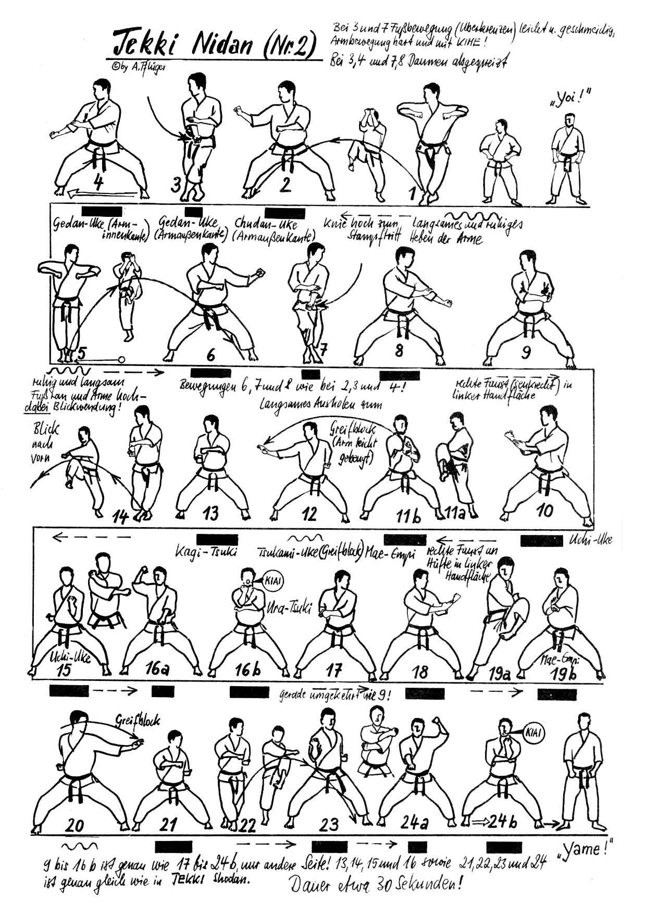

Tekki Nidan

- Yoi e vado in Hachiji Dachi
- Sguardo a destra incrocio le gambe sinistro avanti ed eseguo Shinobi Hashi verso destra mentre porto i pugni all’altezza del petto gomiti paralleli al terreno.
- Portando gli avambracci paralleli davanti al viso con i dorsi all’esterno, scendo in Kiba Dachi con la guardia a destra.
- Incrocio la gamba sinistra davanti alla destra ed eseguo Morote Ude Uke Gedan destro dorso al pavimento da destra a sinistra, apro la gamba destra in Kiba Dachi ed eseguo Morote Ude Uke Gedan destro da sinistra a destra.
- Riunisco la gamba sinistra mentre porto i pugni all’altezza del petto gomiti paralleli al terreno.
- Portando gli avambracci paralleli davanti al viso con i dorsi all’esterno, scendo in Kiba Dachi con la guardia a sinistra.
- Incrocio la gamba destra davanti alla sinistra ed eseguo Morote Ude Uke Gedan sinistro dorso al pavimento da sinistra a destra, apro la gamba sinistra in Kiba Dachi ed eseguo Morote Ude Uke Gedan sinistro da destra a sinistra.
- Porto il braccio sinistro al fianco mano aperta con il pugno destro che appoggia sul palmo e continuo la sequenza eseguendo Morote Uke destro verso destra.
- Eseguo Nami Gaeshi destro e riappoggiando il piede eseguo Mawashi Empii Uchi destro frontale.
- Eseguo Tate Shuto Uke destro verso destra e Mawashi Tzuki Chudan destro verso destra.
- Tenendo ferme le braccia eseguo un passo laterale verso destra incrociando il sinistro ed Migi Shinobi Hashi mentre scendo eseguo Uchi Uke sinistro.
- Tesa Uke sinistro e carico ruotando il braccio Age Morote Tzuki destro richiamando il dorso della mano sinistra sotto il gomito destro. Kiai.
- Porto il braccio destro al fianco mano aperta con il pugno sinistro che appoggia sul palmo e continuo la sequenza eseguendo Morote Uke sinistro verso sinistra.
- Eseguo Nami Gaeshi sinistro e riappoggiando il piede eseguo Mawashi Empii Uchi sinistro frontale.
- Eseguo Tate Shuto Uke sinistro verso sinistra e Mawashi Tzuki Chudan destro verso sinistra.
- Tenendo ferme le braccia eseguo un passo laterale verso sinistra incrociando il destro ed Migi Shinobi Hashi mentre scendo eseguo Uchi Uke destro.
- Tesa Uke destro e carico ruotando il braccio Age Morote Tzuki sinistro richiamando il dorso della mano destra sotto il gomito sinistro. Kiai.
- Richiamo la gamba destra in Hachiji Dachi.
- Yame.